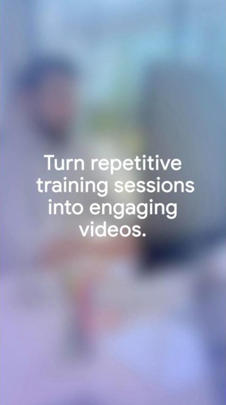
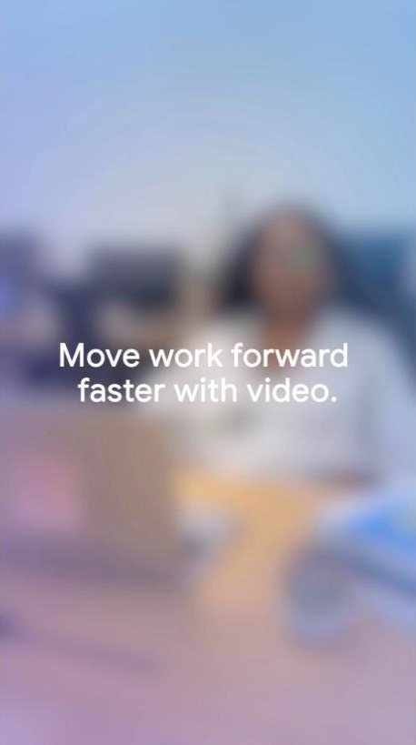
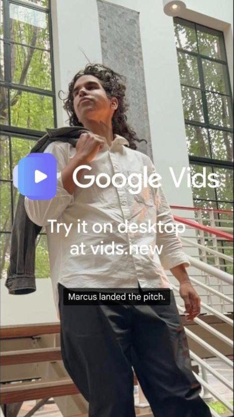
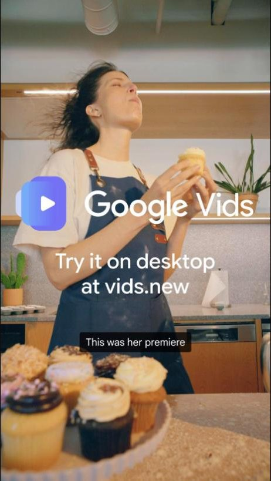
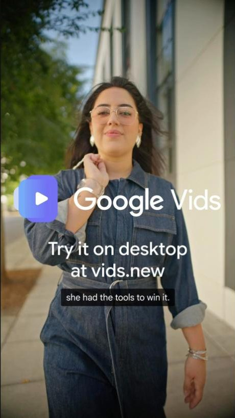

part content series, built with Google
Making video creation feel accessible to people who don't think of themselves as video makers, and showing how AI supports the creative process without removing the human behind it.
- Product narrative strategy for social
- Aligning directly with Google on product and marketing strategy
- Audience segmentation
- Which features to advertise, and why, based on market research and how competing products market themselves
- Product troubleshooting: testing Vids hands-on to find which features were strongest for each audience, then kicking off creative concepting around them
Product troubleshooting was at the core of the strategy. Testing Vids hands-on, alongside market research and competitor analysis, showed which features were strongest and who they mattered to most. Each of the five posts matches one feature to one audience: training decks into polished videos for teams, quick walkthroughs and feedback for busy projects, Slides into video pitches for professionals, everyday clips into promo videos for small businesses, and AI avatars and voiceovers for founders without a production budget.




